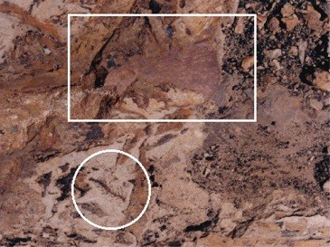
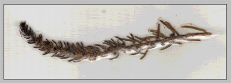

)
)
| e-mail - July 2000 |
| by Do-While Jones |
|
Subject: Anti-evolution Date: Mon, 12 Jun 2000 23:00:57 PDT From: "John" Hello, my name is John and I just wanted to raise a few questions about your website. I am a junior in high school and I am currently taking a 2-year honors biology course. We are currently learning about evolution...you know, microevolution and macroevolution and the like. My problem is the fact that I believe it. To me, it makes sense. But your website has put a kink in everything, and now I don't know what to think... Well, not really. I STILL believe in evolution, and I can only thank you emphatically that your website takes a scientific approach to the whole idea instead of just being another "We hate evolution, and God hates you if you believe in it" website. But I do have some problems with some of your ideas, and I would like you to consider them, if you will. First is your notion of fossils. Fossils are rocks. Plain and simple. Sure, they WERE bones at some point, but over time (how much time we'll get to later) the minerals in the bone were replaced with sediments. |
Please don't think we are being argumentative. The only reason we bring this up is that we are afraid a teacher will ask you, "What is a fossil?" on a test, and you will give the wrong answer. Not all fossils are rocks.
"A fossil is any sort of remains of a past organism. Footprints and burrows count as fossils, and these are termed trace fossils. On the other hand, an impression of the body where it came to rest after death, or some part of the body that has actually been preserved is described as a body fossil. ... Perhaps the best known circumstances for a whole organism to be preserved is when it has the misfortune to become trapped in tree resin, which hardens to form amber." 1
So, not all fossils are rocks. You are really talking about "petrifaction," a process in which organic material is replaced by minerals.
| Testing stones for Carbon-14 is absurd. Carbon-14 dating works for things that haven't fossilized yet and were at some point living. Yes, a rock that is dated at 25 thousand years with Carbon-14 dating IS contaminated, simply because if you test it for a different radioactive element you will almost certainly get a result very different than 25 thousand years. Everything of terrestrial origin has a little carbon-14 in it, whether it was ever living or not, simply because it is out there. It is good for dating the remains of recently (I use the term loosely) deceased organisms because carbon-14 has been found to be replaced at a relatively consistent rate in living beings. However, such is not the case with rocks. If a rock has carbon-14 in it, then the only knowledge that can be gleaned from that fact is that it has carbon-14 in it, which probably is because it originates from a planet where atmospheric carbon has become radioactive due to bombardment from cosmic rays. You cannot date a stone using carbon-14, because carbon-14 is not found in ALL stones of any one type. Fossils ARE stones, and suggesting to take some carbon-14 measurements and accepting the results as absolute truth is not very scientific. |
You are mostly correct on this point. Carbon 14 dating doesn't tell you how old something is. It tells you how long ago something died. Since most stones weren't alive to begin with (the notable exception is coal) you can't use carbon 14 dating to tell when they died. We will explain how carbon 14 dating works, and why it tells the time of death rather than age, in our July feature article.
Although you are right that carbon 14 can't be used on stones, your explanation for why it can't be done is not entirely accurate. Let's not worry about that right now. The important thing is that carbon 14 can't date stones. It can only tell when a plant or animal died.
 |
Now, consider this photograph I took on July 23, 1999, on a dinosaur dig sponsored by Montana State University Northern. (I highly recommend that you go on their dig next summer.)
This picture was taken on one of the first days of the dig. The instructor wanted all of us novices to practice digging out unimportant dinosaur bones before she let us try to excavate the hadrosaur eggs the University was really interested in. So, she showed us places to "dig" (if one can, in fact, "dig" with a paint brush), and I uncovered the bone shown in the rectangle. Next to the bone was the fossil plant in the circle. As you can see, the plant had turned to carbon. Clearly, the plant and the bone were buried at the same time. So, we could have taken a sample of the carbonized plant and used carbon 14 dating to discover when it died (which was probably within a few days of when it was buried). |
Of course, an evolutionist would not bother to try to date the plant because it is in the same rock layer as a "70 million year old" dinosaur bone. Since carbon 14 dating can't date anything older than 50,000 years, they would not expect to get a reasonable answer. If carbon 14 dating said the plant died 40,000 years ago (as we suspect it would), evolutionists would reject the date as being "contaminated."
The dinosaur bone I was trying to excavate, by the way, was not petrified. It was pretty fragile, and I did not successfully get it out of the ground in one piece. I am embarrassed to say that I didn't get it out in just two or three pieces. It was so fragile that I didn't get anything big enough to bring home.
| Aside: Ironically, as we were walking back to camp that day, one of the other students (an evolutionist) said, "Look! There's your plant!" Sure enough, growing at our feet was a plant that looked just like the one I found in the rock. I picked it and put it in a plastic sandwich bag. Eventually, when I got home, I laminated it between two pieces of clear package tape. By that time it had become slightly damaged, but it is still in good enough shape that you can see that the same kind of plant still grows today in Montana. |  |
| Second, I have to ask a question... Do you know how long it takes something to fossilize? Definitely longer than 20 or 40 thousand years. How can I be sure? Because the skeletons of Mesopotamians are not really fossilized or near-fossilized when we find them, and they are at LEAST 10 thousand years old when dated with historical evidence alone(ie timelines, correlating evidence, complexity of the society and their technology, etc.)...that is unless you'd rather not believe that any culture could be that old. I am not even sure that fossils of homo sapiens as a species exist, for that matter (I'll admit that I really do not know for sure on that issue). Of course, what could happen is that one day a bone may decide to be a fossil and viola! there it is, instantaneously a rock. Or does it not make sense to make such a great assumption? |
As a matter of fact, I do know how long it takes something to fossilize (petrify). Under ideal conditions in a laboratory, it takes 25 hours. It takes less than 32 years, if the conditions are right, in nature. Answers in Genesis has an excellent web page about "'Instant' Petrified Wood".
Fossilization depends upon the proper conditions more than on length of time. If the required minerals are in solution, then they will replace organic material in very short order. If the required minerals aren't in solution, then thousands of years can go by without fossilization. None of the invertebrate shells that I found in Montana around the hadrosaur eggs were petrified. The invertebrate paleontologist on the dig was not the slightest bit surprised that the shells weren't fossilized. She said they often aren't.
| Also, maybe you should date moon rocks, since you believe that a lack of dust is proof of a young universe. The moon is a great place for it; there is no atmosphere or geological processes to change the moon, so what's there is basically the same as what's BEEN there for as long as the moon has existed. I think you'll find that the radioactive dating of moon rocks suggests quite the opposite of your notion of it's age. |
The radioactive dating of moon rocks suffers from the same problems encountered in radioactive dating of earth rocks, which, by no coincidence, happens to be the topic of our July essay.
| Third, I can't help but wonder why dinosaurs aren't mentioned very much in any historical documents. Can we assume that the T-Rex is a carnivorous beast? Can we assume that they could eat humans, if given the chance? If not, can we assume that we would at least be competing with them for the same food? If we can, and humans lived at the same time as them, why don't our cave drawings really show the mighty T-Rex, eating us or being hunted or something. Sure, we have time to draw buffalo, elephants, deer, big cats, snakes and rodents but apparently the huge beasts that shook the ground when they walked weren't important enough for such a rendition. Then again, maybe those cave paintings are the earliest we started to draw, but we were still around when dinosaurs ruled the earth. That would suggest that people weren't always so smart, at least not smart enough to draw...maybe not even smart enough to use tools, or make fire, or anything else commonly attributed to humans. How are soft, meek, unintelligent apes(because without tools, fire, or culture that's all we are) going to survive without the ability to deliberately manipulate our environment when big carnosaurs are running rampant? |
Would it change your mind if there were any historical documents describing dinosaurs? Remember, dinosaurs were unknown before the first bones were discovered in the 19th century. So, if any piece of literature described a dinosaur before the 19th century, it would have to be based on observation of a living animal rather than bones. The 1611 King James translation of the Bible contains a description of "Behemoth" which sounds a lot like a sauropod, and "Leviathan", which could have been an ankylosaurus. So, if one merely believes that the Bible is a human historical document (without a divine author), you have documentation of two dinosaurs observed in historical times. Native Americans apparently saw something that looked at lot like some sort of pterodactyl. And there are controversial petroglyphs that may be dinosaurs. The classic description of a dragon matches Scaphognathus crassirostris very closely. Our October 1998 essay entitled "Unicorns, etc." contains more examples of prehistoric creatures described in historical settings.
| Lastly, let's say you find a flaw in all of my arguments or those of others...I'm sure there are lots here, since I didn't spend days reading and building this email. And as such you find evolution to be unfounded. What do you suggest to use in its stead? |
In your first paragraph you commended us of taking a scientific approach and not presenting religious arguments. Now you are asking us to present a religious alternative.
| Creationism is much harder to back up scientifically than evolution. |
I personally think that creationism is more consistent with scientific evidence than evolution is. But, our Articles of Incorporation limit us to the examination of the theory of evolution in light of modern scientific data. So, we don't try to prove creation. We are a secular, non-profit corporation, not associated with any church. If you want answers about religious questions, ask a religious organization.
| I have read countless textbooks that say that it's impossible to create an experiment for the existence of a creator using empirical means. The simple fact of the matter is that evolution is the best explanation science can put forward with what it has. |
We agree that one cannot create an experiment that proves the existence of a creator. (We think that the number of textbooks that say this is finite, and therefore countable, however. )
We have often heard the argument that evolution must be true because there is no other natural explanation. We think it reveals a weak position when one has to argue, "Our explanation is inconsistent and irrational, but its the only explanation we have that doesn't involve a supernatural being, so we are going to believe it in spite of solid evidence to the contrary."
| Sure, maybe creationism is the truth, but there is no way to back that argument until God appears in front of TV cameras and "creates" something before our very eyes. The problem with your group is that you work to discredit evolution without suggesting a scientifically viable alternative. |
Where does one get the idea that one can't reject an idea without replacing it with another one? Is that a fundamental difference between a scientist and an engineer?
Suppose an electrical engineer is trying to fix an electronic circuit that isn't working properly. He may take lots of measurements and come to the conclusion that transistor Q3 is burned out. There really can't be any other explanation. It has to be Q3. So, he removes Q3. He takes a brand new transistor, tests it with a transistor checker to verify that it is good, and puts it in where Q3 used to be. The circuit still doesn't work. Not only that, he takes the old Q3 and puts it in the transistor checker and finds nothing wrong with it.
If someone were to ask this engineer, "What's wrong with the circuit?" he would almost certainly answer, "I don't know. All I am sure of is that it isn't Q3." He never says, "Q3 is the best explanation we can put forward with what we have." He doesn't have to come up with a new diagnosis to reject his previous one. He doesn't waste time trying to prove his previous diagnosis is correct. Engineers often find out what the problem is by ruling out all the things the problem isn't.
Some scientists, on the other hand, seem to be hamstrung by the philosophy that one can't reject an obviously wrong conclusion until a better conclusion is reached.
In the 19th century, the origin of the many species of life through evolution was plausible. It was believed in those days that life was "spontaneously generated." They didn't know anything about genetics or information theory. "Simple" cells were believed to be simple. But 20th century science has shown that life doesn't begin spontaneously, variations in species are limited by genetics, and "simple" cells are far more complicated than previously thought. Evolution is no longer a credible theory. But, since there isn't any other natural explanation, scientists stick with the wrong explanation. They seem to be unable to say, "I don't know how the various life forms originated, but I am sure it wasn't through evolution." Many scientists are still wasting time trying to figure out how evolution works. They would make much more progress if they would just forget about evolution. Then they could explore other ideas, and discover more answers.
| And please do not suggest that truth doesn't change over time. Give me a textbook from 600 years ago and it will say that the Earth is the center of the universe and Blacks from Africa are inferior to Europeans. This was all based on common knowledge and empirical evidence. But we know now that these things are not true. Things known to be truth can change over time. |
Please allow us to suggest that truth doesn't change over time. The Earth was always round. It didn't change from flat to round 600 years ago. Blacks never were inferior to Europeans. Opinions and consensus may change over time, but truth doesn't. It was true that the world was round even when all the scientists believed it was flat.
| Don't blame evolutionists because their beliefs have changed, and creationists have remained rock-solid in what they believe... usually those who are the least willing to accept new ideas are the ones who are wrong. |
We don't blame evolutionists because their beliefs have changed. We blame them because they continue to believe an unscientific theory.
|
Anyway, thank you for reading this rather disjointed essay and I hope it encourages you to think about this sensitive idea in a new light.
Respectfully yours, John |
We think that your essay is very well organized, and presents your thoughts clearly. That is what makes it worth publishing. We could publish some of the really stupid e-mails we get to show how dumb some evolutionists are, but that's a cheap shot. We feel it is much more valuable to give people like you, who are obviously intelligent and can make a reasonable case for evolution, the opportunity to present a rational argument.
| Quick links to | |
|---|---|
| Science Against Evolution Home Page |
Back issues of Disclosure (our newsletter) |
| Web Site of the Month |
Topical Index |
Footnotes:
1 Rothery, Teach Yourself Geology 1997, NTC Publishing Group, pages 164 and 168 (Ev)